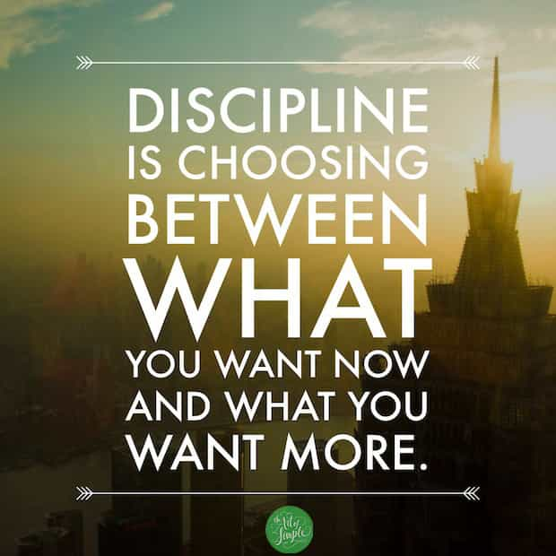
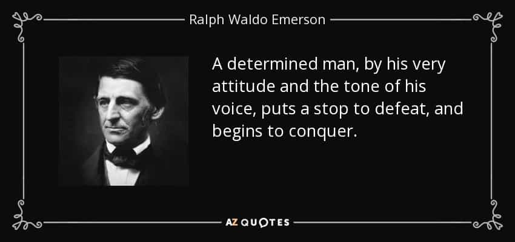

Stewart Brendan is a guy that recently realized that many things around him did not make sense, and after serious logical deduction found his way to the manosphere.


Much has been discussed about what a man should be like, what a man should do etc. However, as I lurked through ROK, I found myself wondering: what makes an adult male, a man? Most people would say that losing your virginity automatically makes you a man. Does it though? With all the man-babies and spineless betas, there are non-virgins among them.
Other cultures had different standards; some tribes in Africa and even some of the earlier European clans required the hunting and killing of a dangerous animal as proof of adulthood. Others required just an age limit (in Jesus’ age, the Hebrew community stated that a male was an adult when he was 30 years old).
Of course, when the criteria are so diverse, there are other core principles behind, that above criteria try to fulfill. I have pondered a lot about that, and I found five core values that a male must achieve to be considered an alpha.

This is the discerning value that separates the adults from the children. And by responsibility, I don’t mean bullshit like “take out the trash” or “feed the cat”, I am talking real responsibility, like taking care of the house (along with finances) and at least another human being. That is a core principle that underlies behind the whole “virginity” thing; by the time this “rule” was established, contraception was not nearly as developed as it is today. So, a loss of virginity meant, more often than not, marriage and a child on the way (or the other way around), which meant immediate and heavy responsibility. Other come-of-age rites like the hunting meant that the “boy” was able to take up arms and fulfill his duties as a warrior and protector of the tribe, so more responsibility there.
Responsibility may be core on the whole adulthood theme, but that can be equally said about women too. From here on though, are the attributes that distinguish real men.

A person without discipline, is a person without a driving force. Discipline, along with determination (see below) are the two things that enable a man to achieve his goals. Working on something not because he has to, but because he wants to (especially if it doesn’t give immediate rewards) and because it is the right thing for him to do, is what separates humanity from animals that act on instinct alone. The military is a great place to actually hone this core value to the best of your ability. Guys without discipline (or guys who lose their discipline) deteriorate quite rapidly, as their whole energy and purpose collapses after half-assed attempts.

Having the discipline is all nice and good, but if you lack the will to start it, you go nowhere. Determination is the brother value of discipline in starting and keep going on your goals, whatever they may be. A male without determination is like a jellyfish thrown by a catapult; he has (or not) the discipline to go, but he splatters all over the place when he hits something hard. Do not mistake determination for courage though; courage is one of the more complex and combined values (see below).
Having the driving force behind your back, it is now necessary to steer the ship; focus is the thing to keep you from going astray. A man without focus won’t achieve his dreams anytime soon. Focus may be difficult to hone, as it is something that does not come naturally and is quite hard to train on. Trying to keep a reminder (usually visual) of your goals on display somewhere where you can see often is a movie-inspired (Rocky IV- when Balboa put a picture of Ivan Drago on his mirror, right next to the picture of his wife) but common way to maintain focus, but it is not the only one. Focused men reach very far into their direction, which can be a double-edged sword. Because focus is about keeping your direction, but not choosing it.

Choosing your direction is something that is provided by logic. And by logic, I mean liquid-helium cold logic. Women tend to act on emotions, and it is up to men of reason to steer them right. A man without reason is best described as a “loose cannon”. This may be the trickiest of the five values to hone and assess, as it is purely mental – physical stimuli is ineffective at large to train your logic skills. Please note that by logic, I do not mean common sense – I can’t stress this enough. The following example of game theory will try to explain what I describe as “logic”:
Suppose three men, that decide to solve their differences with a pistol duel. Mr Black is the worst shooter of them, having only 33% accuracy. Mr Grey is better, having 66% accuracy. Mr White is the best of them, with 100% accuracy. To be fair, the sequence of shots starts with Mr Black, then Mr Grey, and then Mr White, until only one man is left standing. What should Mr Black do?
Common sense says Mr Black to shoot at Mr White; if he shot at Mr Grey and hit him, then it would be Mr White’s turn and Mr Black can be considered dead, but in the off-chance that he hits Mr White, it would be Mr Grey’s turn and he has 33% odds of surviving for the next round.
Cold hard logic, however, says this: Mr Black should shoot the air.
The aftermath is easily explained, why this is truly the best option; Mr Grey and Mr White will certainly go for each other, as they pose a greater threat, and whoever survives, Mr Black will have 100% odds of having a one-on-one duel where he has the first shot.
That kind of machine-like logic is shunned by many; namely almost all SJW and other emotional goons, with the appropriately non-logic argument “it’s cynical/negative/inhumane” – notice that none actually says “it’s wrong” because it is not. Believe it or not, it was actually logic that led me to the manosphere. But I digress.
You may be puzzled by the absence of other high-held values, but if you look close enough, you can see that those values are just combinations of the above. Bravery can be a calculated risk. Workout can be a logical means to hone discipline. Game can be a combination of all five to the goal of sex. Minimalism is the logical consequence of applying logic and discipline to your life.
While declaring that those principles are the pillars of manhood is surely arrogant and quite prone to error, it is something I have deducted after much, much observation and thought. You may agree or not, but the truth is, whenever someone lacks any of the above, or loses it along the way, we all see the aftermath. These core principles are the foundations on which you can build your castle, whatever form that may be.